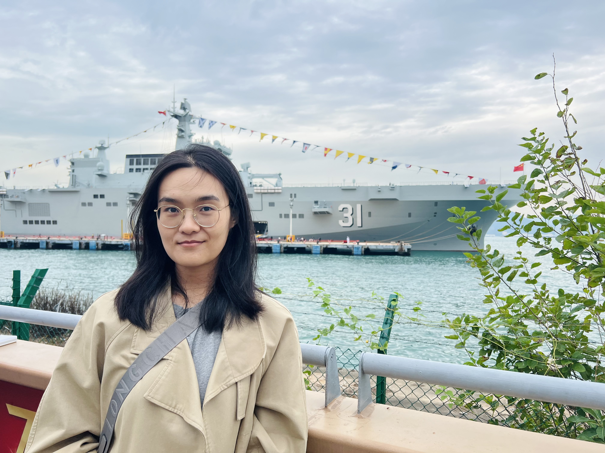

Yu LiuPh.D.
Department of Medicine and Therapeutics |

Snapped in Kennedy Town, HK
|
Yu LiuPh.D.
Department of Medicine and Therapeutics |

Snapped in Kennedy Town, HK
|
I am currently a Ph.D. candidate at Faculty of Medicine, The Chinese University of Hong Kong. Previously, I received M.Phil. degree from Biomedical Engineering at Beihang University in 2021, and B.Eng. degree(Honor) from Biomedical Engineering at Hebei University of Technology in 2018. Before starting my Ph.D. study, I worked as a Research and Development (R&D) Engineer in the Cardiovascular R&D Department at Fosun Aitrox Co., Ltd., Shanghai, from 2021 to 2022.
My research interests include image computing, signal processing, computational fluid dynamics(CFD), and their application in cardiology, neurology and neuroscience.
Recently, I focus on using CFD technique to investigate the hemodynamic patterns and clinical implications of intracranial atherosclerotic stenosis.
| 2025 |
| Enlarged translesional pressure gradient drives recruitment of leptomeningeal collaterals in medically treated patients with symptomatic middle cerebral artery stenosis Yuying Liu, Xuan Tian, Jill Abrigo, Shuang Li, Yu Liu, Linfang Lan, Haipeng Liu, Conaventure YM Ip, Sze Ho Ma, Karen Ma, Florence SY Fan, Hing Lung Ip, Yannie OY Soo, Howan Leung, Vincent CT Mok, Thomas W Leung, Xinyi Leng† Cerebrovascular Diseases (Cerebrovasc Dis), 2025. |
| Is Invasive Fractional Flow Measurement Accurate in Intracranial Stenosis? A Computational Simulation Study Yu Liu*, Zhengzheng Yan*, Ziqi Li, Yuying Liu, Sze Ho Ma, Bonaventure YM Ip, Thomas W Leung, Jia Liu†, Xinyi Leng† Journal of NeuroInterventional Surgery (JNIS), 2025. |
| More severe cerebral small vessel disease associated with poor leptomeningeal collaterals in symptomatic intracranial atherosclerotic stenosis Yuying Liu, Shuang Li, Xuan Tian, Jill Abrigo, Bonnie YK Lam, Jize Wei, Lina Zheng, Yu Liu, Ziqi Li, Tingjun Liang, Bonaventure YM Ip, Thomas W Leung, Xinyi Leng† Journal of Cerebral Blood Flow & Metabolism (JCBFM), 2025. |
| Stroke Mechanisms in Intracranial Atherosclerotic Disease: A Modified Classification System and Clinical Implications Shuang Li, Xuan Tian, Xueyan Feng, Bonaventure Ip, Hing Lung Ip, Jill Abrigo, Lina Zheng, Yuying Liu, Yu Liu, Ziqi Li, Tingjun Liang, Karen KY Ma, Florence SY Fan, Sze Ho Ma, Hui Fang, Bo Song, Yuming Xu, Howan Leung, Yannie OY Soo, Vincent CT Mok, Ka Sing Wong, Xinyi Leng†, Thomas WH Leung† Translational Stroke Research (Transl Stroke Res), 2025. |
| Clinical implications of haemodynamics in symptomatic intracranial atherosclerotic stenosis by computational fluid dynamics modelling: a systematic review Yu Liu, Shuang Li, Haipeng Liu, Xuan Tian, Yuying Liu, Ziqi Li, Thomas W Leung, Xinyi Leng† Stroke and Vascular Neurology (SVN), 2025. |
| 2024 |
| Cerebral hemodynamics and stroke risks in symptomatic intracranial atherosclerotic stenosis with internal versus cortical borderzone infarcts: a computational fluid dynamics study Shuang Li, Xuan Tian, Bonaventure Ip, Xueyan Feng, Hing Lung Ip, Jill Abrigo, Linfang Lan, Haipeng Liu, Lina Zheng, Yuying Liu, Yu Liu, Karen KY Ma, Florence SY Fan, Sze Ho Ma, Hui Fang, Yuming Xu, Alexander Y Lau, Howan Leung, Yannie OY Soo, Vincent CT Mok, Ka Sing Wong, Xinyi Leng†, Thomas W Leung† Journal of Cerebral Blood Flow & Metabolism (JCBFM), 2024. |
| Hemodynamic significance of intracranial atherosclerotic disease and ipsilateral imaging markers of cerebral small vessel disease Lina Zheng, Xuan Tian, Jill Abrigo, Hui Fang, Bonaventure YM Ip, Yuying Liu, Shuang Li, Yu Liu, Linfang Lan, Haipeng Liu, Hing Lung Ip, Florence SY Fan, Sze Ho Ma, Karen Ma, Alexander Y Lau, Yannie OY Soo, Howan Leung, Vincent CT Mok, Lawrence KS Wong, Yuming Xu, Liping Liu, Xinyi Leng†, Thomas W Leung† European Stroke Journal (ESJ), 2024. |
| 2023 |
| Effects of abnormal vertebral arteries and the circle of Willis on vertebrobasilar dolichoectasia: a multi-scale simulation study Liu Yu*, Zhang Xinmiao*, Wang Yawei†, Feng Wentao, Jing Jing, Sun Zhujun, Wang Bitian, Wang Yongjun, Fan Yubo† Clinical Biomechanics (Clin Biomec), 2023. |
| 2022 |
| Effects of stent shape on focal hemodynamics in intracranial atherosclerotic stenosis: A simulation study with computational fluid dynamics modeling Haipeng Liu, Yu Liu, Bonaventure Y M Ip, Sze Ho Ma, Jill Abrigo, Yannie O Y Soo, Thomas W Leung, Xinyi Leng† Frontiers in Neurology (Front Neuro), 2022. |
| Variations of human cerebral and ocular blood flow during exposure to multi-axial accelerations: A mathematical modeling study Weipeng Li, Bitian Wang, Yawei Wang†, Xiaoyu Liu, Wentao Feng, Tianya Liu, Zhujun Sun, Yu Liu, Songyang Liu, Yubo Fan† Medical & Biological Engineering & Computing (MBEC), 2022. |
| Research postgraduate scholarship, The Chinese University of Hong Kong |
| First-class scholarship, Beihang University(3 times) |
| Outstanding graduate, Hebei Province(top 5%) |
| Best thesis award, Hebei University of Technology(top 5%) |
| First prize, National Undergraduate Biomedical Engineering Innovation Design Competition(top 10%) |
| First-class scholarship, Hebei University of Technology(2 times) |
|